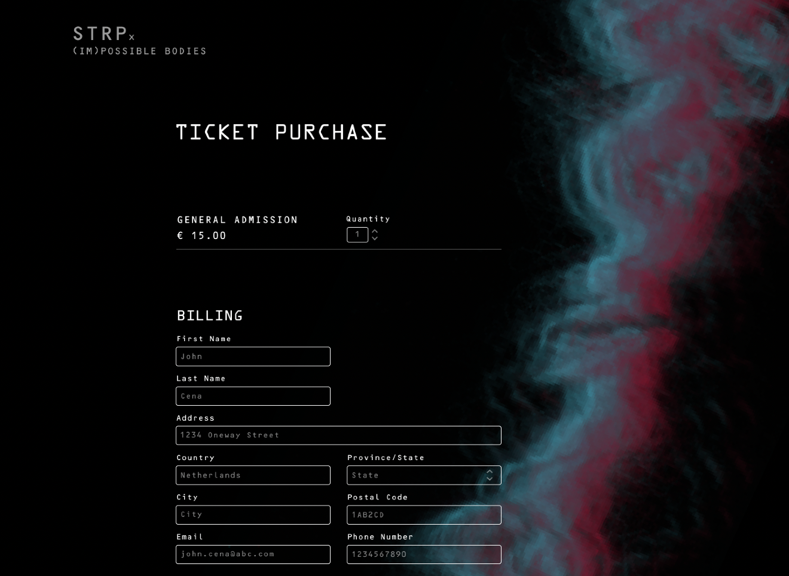

STRP Biennale
Duration:
Nov 2020- Dec 2020
Role:
UX designer
Graphic designer
Team:
Alexis
Anika
Chinmayee
Erin
Soraya
Prompt
For a course I took, Information design, we were told to create graphic assets and a microsite for RAW colour to showcase their work in the STRP exhibition. At the beginning of this project, we were told to study Allen Hori, an experimental designer, and take inspiration from him for this project.
Allen Hori Graphical Experimentation
Based on our research and detailed study of Allen Hori's design style, we learnt more about experimenting with layers and color. Here are our initial designs based on Allen Hori's style.
The first image on the left talks about how humans are on top of the food chain, and we are at the tip of the triangle, which is why we have massive ego, and we feel we are superior to everyone around us.
This is the graphic asset that Soraya and I worked on, and I was in charge of designing the poster. Here posthumanism is about combining humans with machines, and so the tiny dots with lines that make up the eye are like the fibre optic things. The eye is meant to be like a black hole for the future, with endless technological advancements. So another way to look at it is an eye, which also plays into artificial intelligence.
The image on the extreme right was inspired by the fluid curves the designer uses in his work, and we tried to incorporate that by using yarn and taking photos of it. In the third image, we have scanned a piece of yarn and used that as a graphic element. We used pink and blue colour to depict the essence of posthumanism. We did this by intertwining the yarn so that the colour red represents humans and blue represents artificial machinery.
Graphic Assets
After presenting our 3 directions, we decided to go ahead with the third idea of the fibres and here are 3 graphical assets we produced for the event: poster, lanyard cards and tickets.
Unpacking microsite details- landing page
Here is our landing page, where again we tried to emphasize the red and blue fibres that intertwine to depict posthumanism, and we used blender software and after-effects to implement it. We faced some challenges here because it was our first time working with interactions, and we had no clue how to execute a physical idea onto a microsite. However, with the help of more research and learning new software, we executed the fibre concept beautifully.

Navigation
The following gif below shows the navigation of the microsite. We decided to opt for a horizontal navigation bar to deliver the most necessary information for a user. According to me, it gives a futuristic feel to the microsite because not many designers explore the horizontal scroll option, and because we were doing a project about posthumanism, it was essential to add something that is not very common indicates something that is ahead of current times.

About and speakers section
The about and speakers section of the microsite provides visitors with important information such as the event's date & time, a summary of the topics discussed during the event and information about the speakers. However, the main interaction is when the user hovers over 'ABOUT' or the speaker's name, then their details will pop up to indicate how the users will explore the event in person.
Ticket purchase page
On the ticket page, visitors can specify the quantity of tickets they wish to purchase. They can then proceed to enter their billing information alongside their payment information. Visitors are provided an order summary where they can proceed to confirm their purchase. When pressed, the STRP and (IM)POSSIBLE BODIES brand allows the visitor to return to the landing page.
Reflection
This was the first project that I have hand-coded by myself with my teammate. It was a great experience to know the process of converting designs to actual code. As it was our first time, there are a few errors with responsiveness and overall spacing. In addition, the form and footer design could be better because this was the first time for me to transfer designs from Figma to code; I had less time to focus on the site's design elements. Now, in hindsight, I would fix those nitty-gritty things to make the site much better.
Nevertheless, I am happy that the concept behind using colour and interactions in a particular way made our project successful. Selecting a vaccine booking system instead of a general e-commerce website made me stand out amongst everyone else doing this course. I believe that this wasn't something I had many references to go through before making the microsite. In the end, I am very proud of my teammate Firm and I for designing and coding this microsite.